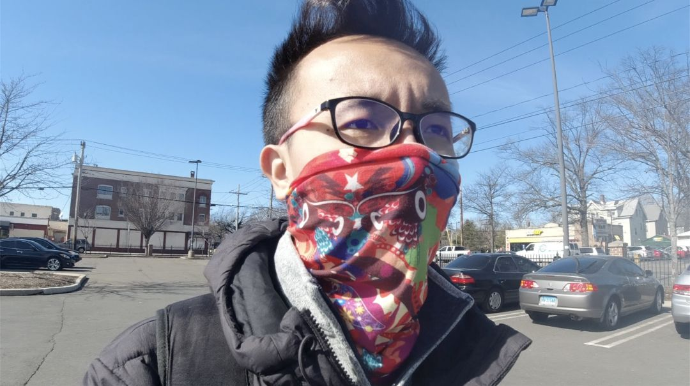
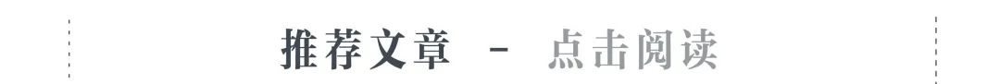

我在海外 | 我担心的是英国人遏制不住向往自由心， 不少人依然我行我素
原文链接 备份链接 我担心的是英国人遏制不住向往自由心， 不少的英国人依然我行我素，四处溜达、遛狗、遛球、遛娃。 文 | 小 麻 “什么？我现在在英国？病毒？中国有病毒？全球都有病毒？我怕是在做梦吧？” 三周前我参加了一场当地足球赛，摔倒 …


一个半月前，国内的亲属和新冠疫情的发展是他们担心的事情；一个半月后，他们开始担心起了身边人和自己。

配图 | Sipa图片社


陈愿看到学校官网上挂出本科和硕士的停课通知，是在当地时间2月22日晚——那一天，意大利伦巴第大区新增确诊病例35例，世界卫生组织执行理事会成员、罗马天主教大学（Università Cattolica del Sacro Cuore）公共卫生医学教授Walter Ricciardi在这天下午接受采访时表示：“在新的Sars-CoV2冠状病毒引起的感染数量上，意大利目前在欧洲国家中排名第一。”
但陈愿对这一切并不知情，他所就读的博科尼大学在伦巴第大区的首府米兰，是世界上的顶级商学院之一，想从这里的经济学专业按时博士毕业，不是一件很轻松的事情。这是他来到意大利的第一年，平时因为课业紧张，他每天的活动范围基本限定于宿舍和教学楼之间，而且靠英语上课和生活，获取米兰当地的信息渠道可以说十分有限，对于周边的小镇突然冒出的确诊病例，并不知晓。
陈愿的状况，也是中国留学生的常态，大家都没想过意大利的疫情会这么严重。“当时处于一种无意识状态，谁都不知道病毒已经摸到门前了，我们竟然还在上课，课间也没有同学讨论意大利有疫情这事。”陈愿说。
所以，陈愿和他的同学们看到通知时，先是有些莫名其妙——昨天中午学校还在正常上课，怎么突然就要停课？随后，他们在手机群里讨论起了博士生是否也会停课的问题。第二天早上收到校方发来的停课通知邮件时，陈愿甚至有点开心，“没觉得（停课）会持续多久，想着停课一周，可以休息看看书”。他的同学宫正也说，“以为最多停课一两周”。
就在陈愿他们停课的第一天，意大利确诊数字单日增长突破了50例。那时的他们，完全没有没意识到，自己将在未来的一个月里，生活在欧洲疫情的“风暴中心”。

在陈愿他们停课这天，将近9000公里之外的韩国首尔，已经将疫情从“预警”上调至最高级别“严重”。韩国政府宣布，强化应对措施，在境内设置了500多个室外检测场地，即便在机场出境，旅客也要体温检测正常才允许登机。
5天后，穿着黑色校服的若若在首尔的小雨里拖着大行李箱，准备搭乘地铁赶往机场。地铁里的广播不断循环播放，提醒乘客佩戴口罩，乘客们基本只露出眼睛。手机提示音响了两下，若若又收到了当地政府push来的两例确诊人员活动线路的警报（在韩国，若有最新确诊病例，政府会及时向市民手机上统一发送确诊人员活动路线的信息）。
到了机场，广播里依旧在提醒大众佩戴口罩。“大家的防护措施都做得很好，我坐的是韩亚航空，乘务员和所有乘客都戴了口罩，有些人还会戴一次性手套和护目镜，还有个中国女生，穿了一整套的防护服登机”。
若若搭乘的这班从首尔飞往成都的航班，是双流机场第一趟落地后对乘客统一做核酸检测、进行隔离的境外航班——这项规定在飞机的飞行途中刚刚出台，并立即执行。“大家都不知道这项规定，落地后手机开机才看到的新闻，很多来接机的亲属朋友都已经到机场了——但大家都能表示理解”。
晚上11点，航班落地，穿着防护服的工作人员先是一排排地用电子温度计给乘客们测量体温，下了飞机走到入境口时，还会用更准的水银温度计再测一次。登机时，乘客都是体温正常的，但有一个乘客在成都落地后体温升高。
机场为这架航班的乘客规划了专门的“入境通道”，保证全程不会见到其他航班下来的乘客。5个小时后，若若他们被统一送达酒店做核酸检测、进行隔离，期间若若能见到的，只有工作人员，“行李都不用我们自己取，工作人员取好后直接送到我们隔离的酒店，自己到一楼认领”。
在酒店隔离的第一晚，等待核酸检测结果的若若非常紧张，“结果出来前，都觉得那个发热的乘客多半会被确诊，因为他的症状几乎与新冠症状一致”，“做完核酸检测后我一宿没睡，虽然身体很累，但是没有睡意，干脆就在酒店房间把一路上拍的视频剪成vlog发在社交媒体上。有一些评论很难听，但大多数国内的朋友都是祝福我好运”。
若若回忆起那一晚，语气里似乎还带着些后怕，好在，那个发热的乘客只是个让人虚惊一场的小插曲，“是因为肺结核的缘故，被四川这边的专家排除了新冠肺炎的可能”。
不到一周，双流机场的处理境外航班的效率提高了很多，“后来我朋友在3月5号，坐相同的航班，一样的落地时间，他们到达酒店时才凌晨1点，整个检疫过程的时间缩短近一半。”若若说。

就在若若还在隔离酒店里担惊受怕的时候，在大洋彼岸的纽约，哥伦比亚大学流行病专业研二的小晴已经开始囤东西、减少出门了。
早在3月1日纽约市公布第一例住在曼哈顿区的确诊病例前，她作为志愿者，参与了一些国外病毒传播预测模型的分析和文献翻译的工作。
“拿中国的一些数据跑了很多模型，发现纽约的情况早就不是他们报道的那么乐观——脚趾头想都能想明白纽约为什么很危险：这么小一个地方，住了860万人，大部分人每天都要靠火车、地铁进行上下班通勤，怎么可能是一个‘0 Case’的地方？之前一直觉得很荒谬，所以很早以前我就不怎么出门了。”
“中国留学生是整个美国境内最不安的一群人，因为我们得到的是两方面的信息。”1月20日刚从中国飞回美国的小晴，还很担心国内的家人，但在纽约的确诊数字每天都上涨后，她开始无比担心自己和身边朋友的安全。“我们国家正在经历特别严格的封城的措施，所有人都居家隔离，全部停工，都remote（远程办公、教学）。而这边，一开始就是告诉大家‘没有事情’、‘你被感染的风险非常低’、‘年轻人都不会死的’、‘你有很大的可能活下来’、‘大家不要担心这就是一场感冒’。”这些说辞让小晴感到疑惑，“每天都是瞠目结舌的状态”。
“一开始在我周围，除了中国人，几乎没有美国人紧张这个事情——我们学院就是公共卫生（学院），我和舍友都是学流行病的，她还是一个博士生，我俩一直就在争论这个（病毒）的风险问题。”
在纽约市出现第一例确诊病例后，CDC和校方不鼓励戴口罩的宣传让小晴有些费解，“学校发邮件让大家不要害怕，也不要戴口罩，记住勤洗手保持个人健康与个人卫生就可以。”
小晴和导师讨论过这个问题，“他觉得我们做各种公共卫生intervention（介入），这些干预措施不能只考虑绝对风险，还要考虑一个相对的balance（平衡），就是到底benefit ratio（效益比）是多少，就是说，做这个举措，在带来的收益和造成的影响之间，要平衡一点。”
后来小晴想：美国不鼓励民众戴口罩，除了防疫理念的差异，还有一个现实原因是，这里的口罩已经很难买到了——在1月下旬中国的疫情初始时，很多华人和留学生群体因为担心国内的情况，收购了大量当地的医疗物资捐赠给国内，那时美国的医疗物资就已经显露出短缺的迹象。
小晴在做志愿者的那段时间，一个专门负责购买援助物资的同事就说，他很担心美国也会爆发这个疾病，“一旦爆发了，可能就完蛋了，因为美国什么都没有了，快被搬空了”。此外，华裔戴口罩被攻击的新闻也让小晴觉得不安，“我们连保护自己都不能做，我好想戴口罩出门，但是我不敢，光这一点就已经很令人不安了，还不如（留）在国内。”
那一周，学校里的课程和活动一切照常。“我们中国的留学生一直都挺希望学校上网课的。”小晴说，“你的同学每天在整个纽约通勤到处走，然后跟你一起在很小的一个教室里待3个小时，（留学生）都很害怕。”想戴口罩又不敢戴的问题也让中国留学生觉得尴尬，“不好意思戴，因为真的没有人戴。美国的同学看到你戴口罩，还会劝你：‘没有用，洗手就好。’所以我们一直希望上网课，这样谁也不碍着谁的事，感觉能安全点。”
不过，美国各个州的自治权很大，不同的州应对疫情的措施的差异，也给所在州的中国留学生带来不同感受。
耶鲁大学所在的康乃狄克州是美国进入“紧急状态”最早的州之一，州政府对疫情的迅速反应和推出的齐全措施，给了在这里读博士的殷桥很大安全感：“你看纽约州、华盛顿州还有加州，确诊几十例甚至出现死亡病例后才进入紧急状态，我们州在只有2例确诊时就进入紧急状态了。”
但这种“安全感”却不包括戴口罩——尽管很早前就储备了几盒N95口罩，但3月7日这天，殷桥去超市采购时，却只是用围脖掩住口鼻。
“（美国）这边如果你戴着口罩上街的话，（别人）会认为你是有问题的，要不是得病了，要不是有风险的人群，多少会遭人议论——所以呢，入乡随俗，他们不戴，我也不戴了，但是我还是做了点个人的防护措施。”他买了饼干、罐头、洗手液、消毒液和一些冷冻食品，“周末超市里的人还是有点多的，但真的没有人戴口罩。”

| 殷桥去超市时只能用围脖掩着口鼻（受访者供图）

就在殷桥还在美国逛超市的时候，大西洋的另一端，伦巴第大区已经成了整个欧洲疫情地图上的“红色区域”，面临封锁，不能进出。
2天后，意大利总理Giuseppe Conte在当地时间晚间宣布：为应对疫情升级，将从3月10日开始在全国范围内实行封城禁令。
媒体已经先于政府几个小时把全国封城的消息放了出来，两周来频繁变化的政策，让恐慌的情绪在意大利的留学生群体里蔓延开来，中国留学生们在手机里拉了各种有关疫情信息讨论的微信群。这些20多岁的年轻人，大多是第一次在海外遇到这样非常态的事情，有人问：机场封没封锁，到底回不回国？
有些人当机立断，当晚就订了几个小时后回国的航班。陈愿那个在读硕士的舍友就是其中之一，他在晚上10点多看到新闻后，“行李都没收拾，真的是什么都没带，就拿了手机、护照、钱包，订了1个小时还是2个小时后在莫斯科转机的航班。订完票后，就直接去机场了”。
相较于整个学期被取消、可以回国躲避疫情的本科生和硕士生，陈愿这样的博士生却只有留在当地这一种选择。“从课业上来讲，我们博士一年级有专业课，还得做各种考试，时间太紧张了，压力也大，没办法。再者，从安全和可行性上来说，我们现在回去也不安全，即便回国后也得隔离14天，对现在的我来说，没什么必要。”
对选择继续留在意大利的陈愿们来说，封城后，生活也还要继续。宫正与他合租的中国室友已经一个多月没出过门，食品全都网购，“昨天买了120个鸡蛋，够我们吃1个月了”。因为超市离学校宿舍不远，陈愿还是选择了线下购物。“以前两三天去一次超市，这周只出去买了一次，”陈愿说，“早上出门买菜时还是会看到当地有很多人出来遛狗和跑步，但中文英文网络上的报道都是很严重的样子，有一种非常魔幻的感觉。”
作为不懂意大利语的外国人，看不懂当地的媒体报道，让很多中国留学生遇到了信息不对称的问题。出了学校，除了一些景区和大型商超，到处都是意大利语。疫情将这种语言隔阂放大了。
“比如之前政府考虑说要在周末时关掉超市，于是周五时很多市民就排长队去抢购——但我们留学生就不知道他们为什么嘛，后来在群里问了意大利的同学才明白。你不知道发生了什么，就容易胡思乱想，这是信息闭塞带来的不便。”陈愿笑着说，“到现在我也不知道这个封城政策执行力度和标准是什么，之前看新闻说，有人在罗马在外面散步打篮球，被警察抓到起诉了，但我今早见到的那些人，就不太确定他们被警察遇到了会怎么样。”
3月9日意大利封国禁令出台后，米兰当地的超市开始限制人流，“大家会在外面排队，出来多少，再进去多少，要保证人群密度不是太大。”3天后，在政府发布不能出门的规定后，超市的举措进一步升级，陈愿说，“3月14日早上我去买菜时，大概有60%的人都戴了口罩，工作人员、收银员也都戴口罩，原来超市里的bar也关了，看来还是重视了不少。”
陈愿发现，超市门口还放了可以免费抽取使用的一次性手套——与疫情初期相比，当地人对病毒已经开始重视起来，有了更多的防护措施。“每天死亡和被感染的人数都在往上窜，有时候你讲科学的东西没什么用，因为大家有文化差异，对医疗知识的认知和理解都不一样，但是数字是很鲜活地摆在面前的，这比之前苦口婆心地劝说要有用很多。”

| 去超市的意大利人也开始戴上了口罩（受访者供图）
与陈愿一样，因为课业的原因，在韩国读大四的张文博也选择继续留在韩国，“我只剩下7%的课没修了，如果选择休学回家，变更签证是很麻烦的一件事”。
在他租住的三人间公寓里，另两个舍友都选择回国，目前只有他一人留在首尔。之前，“一个舍友在14天隔离期没过时，因为咽炎，有些咳嗽得厉害，但又不确定是不是‘新冠’，就给1339疾控中心打电话做报备。很快就有救护车来拉他去定点医院做检测，这些都是免费的，第二天检测结果是阴性”。
韩国中央防疫对策本部（KCDC）这些及时迅速的做法，给了在韩留学的年轻人很大安全感。“在韩的中国留学生有8万人，我觉得起码有4万还留在韩国吧。”张文博说，他并没有觉得疫情对自己的生活造成太大影响，只是对学业修课方面造成了一定困难，“以往选不上的课，找教授签个字就行，但现在只能网上填表，不知道能不能选够学分，如果不够的话，可能之后我也会选择休学回国。”

尽管心中不安，将在今年5月毕业的小晴却只能选择留在纽约。原因很现实——她已在当地找好工作，在等自己的EAD卡（工作批准卡），在毕业前3个月提交申请后，这个卡预计6月中旬到7月份时才能到她手里。“在等这个卡的期间，我是不可以出境的，一旦出境，就再没办法用这个卡了，回不到美国去。所以我和身边很多朋友，都是因为身份问题被困在这里。”
小晴又说，哥伦比亚大学一些研究生一年级或本科生，在纽约疫情刚刚严重、学校开始上网课的时候，就已经纷纷回国。
可小晴对于回国，还有另外一层担心——相较于日韩留学生，留学欧美的人更多还要考虑路途中转机时被感染的风险问题。“美国自己在欧洲的居民都在回国，疯狂往回赶，看今天的报道，美国的各大机场‘入境’都排很长很长的队，现在的机场人特别多特别杂，本来航班就很少了，飞30多个小时，还要在日韩或者欧洲一些疫情很严重的国家转机，风险太大了。”
在英国的李查德也抱着跟小晴差不多的想法，“回国的机票太贵了，‘不动’比‘动’安全”。与美国高校正值春假或远程教学不同，3月初的英国，一些高校还未停课。在曼彻斯特大学读电子控制专业研究生的李查德，每天还是会到教学楼上课。
中国留学生上课出勤率的降低，是他在英国疫情形势恶化后感受到的变化之一。3月11日，李查德在教室坐定，环顾一圈后发现，今天本应该有70多人来听的课，只来了不到一半的同学。来的同学里，大多数中国学生已经戴上了口罩。
和李查德同专业的白嘉妮，那天本应该也出现在教室里，但因为担心被传染上病毒，她已经将近一星期没出过寝室，“我囤了足够自己吃一个月的粮，有米面鸡蛋饼干之类的”。白嘉妮选择在家里看录播课自学，因为口罩不足，她从半个月前就有意识地减少自己的出门，“在2月初（英国疫情没爆发）时买过一盒口罩，前天又下单国内的口罩转运到这边。”
白嘉妮身边的一些中国留学生也选择下单国内生产的口罩，转运到英国来。除了口罩，消毒水、洗手液和卫生纸在超市货架上也常常空缺。“去超市买不到卫生纸了，也不知道为啥当地人喜欢囤厕纸。”李查德去了趟超市后回来说。
3月初，欧洲疫情开始发酵时，白嘉妮住所附近的球场也没有关停，餐厅和酒吧照常营业。作为一个女孩，她很难想象英国人对足球和啤酒的热情。2月和3月份是欧冠、欧联两项欧洲俱乐部足球赛事的密集月份，赛后的狂欢聚会是必须的事情，病毒也阻挡不了球迷们的狂热。
从2月开始，在英国举办的比赛有6场，涉及到曼彻斯特、利物浦和伦敦3座城市。2月27日有新闻报道说，一周前，有西班牙瓦伦西亚队的球迷跟随本队前往意大利米兰观看欧冠比赛后，回国出现症状并随后确诊。但3月12日，在英国，利物浦队就要跟西班牙马德里竞技队争夺欧冠联赛1/8决赛的晋级名额，“英国来了许多意大利西班牙的欧洲球迷，让人感觉挺害怕的。”白嘉妮说。
英国政府不断变化的政策也加深了白嘉妮的担心——就在利物浦输给马竞后的第二天，英超联赛宣布停赛，延迟到4月4日；首相鲍里斯约翰逊也在3月16日紧急呼吁民众尽量避开酒吧等公共场所，并特别强调老年人属于患病高危群体；各个高校与中小学也都纷纷停课，改成网课和网上考试——这让一些本来处于观望中的中国留学生们开始动摇，并计划回国。
刘菲就是其中的一个。

本来，两周春假后的3月底，在苏格兰圣安德鲁斯大学读研的刘菲将迎来期中考试的最后一门科目。但她13日就买了回国的机票，不打算参加这场占总成绩20%的考试了：“如果被感染，我在这儿自愈的风险太大了，回国，我爸妈都是医护人员，至少他们能告诉我到底怎么办，就不会挂掉。”
她不确定疫情会不会影响自己的学位，也做好了之后回不到英国、拿不到学位的打算。“我其实挺想要学位的，只不过跟安全相比，还是先保命吧。”
14日早上7点，刘菲带着两个大箱子和两个小箱子离开了学校。同学开车将她送到前往爱丁堡机场的大巴车站时，她突然觉得对这个地方有些留恋。空中飘着的濛濛细雨，让她想起以前在当地旅行时，导游跟她说的话：“下雨天是当地在挽留你。”
“当时蛮感动的，心里就更加有些不舍了。”她说。
从爱丁堡机场起飞的她，需要在土耳其伊斯坦布尔和台北桃园机场转机两次后，才能到达北京首都机场。在前3个机场，起飞前后都没有工作人员给乘客测过体温，“前两班飞机上人很多，没几个人戴口罩，我戴口罩，显得特别突兀。最后从台北飞北京的中华航空，人就很少，我自己独占一排（座位），基本上大家也都是隔一座位坐一个，空姐也会对座位做些调整。”
回家的路比她想象的艰辛：从14日早上7点到16日晚上11点，她中途睡了两晚机场，因为害怕，她在航班上一点东西都不吃，只有起飞前或者落地后才吃些东西，最长时，两餐间隔了16个小时。

| 刘菲在台北桃园机场睡了第二晚（受访者供图）
到了北京，回家的路途也曲折万分。“从首都机场落地后，统一由大巴送往新国展（国际展览中心），在那里选择在北京集中隔离或者转乘其他省市大巴回去，然后再根据各省市的要求，居家隔离或者集中隔离。”
从飞机落地到晚上7点登上回天津的大巴，中途手机没电关机，让刘菲有些担心联系不上家里的父母。“没想过要那么久，”刘菲说，“落地后先是测体温，在额头上点一下的那种，然后叫了几个乘客先下去，又等了2个小时后才让整个航班的人下机，等的时候我都睡着了。”
下机后，她要交一份申明卡才能入关过安检，申明卡上会询问社区是否有确诊、是否有接触过有症状的人等信息。过关后，等行李的时间有些慢，“大家很拥挤，人挨着人，基本上没有什么安全距离。”这让一路做好防护的刘菲有些担心，然而，取完行李，去新国展的队伍也排得挺长，“等了20多分钟吧，也是人和人挨着的那种。”
到达新国展后，要填表登记护照与登机牌，入京的是一条通道，其他省市的走另外一条，然后自己去找各省市的工作人员，听从安排。刘菲的目的地是天津市南开区，“回天津的车上不到30人，有2个外国人，其中1/3是留学生”。
在大巴将一行人送至高速路口时，各区卫健委的负责人员早已安排好面包车在路口等候，面包车会将入境人员送至小区向居委会交接，或是送到集中隔离点。“全程所有工作人员都穿着像‘大白’那样的防护服，戴护目镜。”刘菲说。
晚上10点40分，刘菲终于到达自家小区门口，她看见了等着接她回家的爸爸。“他们都离我远远的，要签字填表、给身份证和护照拍照才能进。”见到爸爸时，刘菲第一句话就是“我16个小时没吃饭”，爸爸则对她喊：“快点，你妈给你熬了粥。”
“到了我家的楼，我妈在电梯门口等着我，也离我倍儿远，冲我喷消毒剂。”在医院一线工作的刘菲妈妈格外注意消毒与安全距离，“隔老远让我把衣服脱到门口的盒子里然后给消毒。”
不锈钢饭盒里装着粥，放到了刘菲“自我隔离”的房间里，“还放了拌饭酱，粥里有虾仁，还不错”。
后记
白嘉妮一直没有出门，靠之前囤的土豆、胡萝卜和白菜这样“耐放”的菜填饱肚子，放不了太久的水果就先吃掉。3月22日这天，她发现一直使用的“线上超市订菜”，配送的时间延长了很久，“现在下单的话，得等4月11、12号才能送到了”。
物价并没有上涨，但居民大量采购囤货，让当地超市货架上的商品常常来不及补货。“一些大型超市，像ASDA和比较远的Costco，去晚的话，货架就会空了一半。”当地超市对此也出台了一些新的举措，比如对长时间保存食物的限购和对易感染的老年人的一些人性化措施。“像Pasta意面，每人只能买两袋，longlife的牛奶，每人限购两盒。ASDA出台了‘周五9点前只有老年人可以进去采购’的规定，因为他们是弱势群体。”白嘉妮说，“我觉得还挺人性化的。”
国内的家人给她寄了口罩和药品。“家人担心药品口罩被海关扣留，就各种途径给我邮寄了几份。我已经收到一个了，这周应该还能收到三个包裹。”与国内大家在疫情期间厨艺大涨一样，白嘉妮觉得在家里做饭也变成了一种乐趣，“起床后吃完饭会看一看网课，然后吃完午晚餐后会做做运动，感觉自己比疫情前更注意运动健身了，毕竟要提高自身的免疫力。”
“学校一开始邮件通知的是上网课到春假结束（哥大的春假是3月13日至22日），然后等待之后的通知。但这一周又说网课要持续到这个学期的结束。”这种变来变去的安排，对整个学期的学术工作都有影响，更别说那些需要做实验的专业。“没什么（解决）办法，今天（美国东部时间3月15日）收到医学院这边最新的邮件，说所有非临床相关的research（研究）都暂停改成remote（远程）了，然后需要去医院的clinical research（临床研究），可能有专家委员出面，需要进一步的衡量风险程度吧。”
如果没有这场疫情，小晴在哥大研究生生涯中最后一门考试，本应该在5月的第一个星期，之后的毕业典礼会在5月19日和5月20日这两天。但她现在已经有些不抱期望了：“我们可能会‘云毕业’了吧——我们都还挺希望正常毕业、有个毕业典礼的，但我个人预计，（课）会一直停下去。”
刘菲觉得自己算幸运的，她有好多同学中转途中因为航班被取消回不来了，各省市对境外回来的人群，政策也都在变。现在她朋友圈最新一条转发的新闻标题是：“18日起所有入境来津人员集中隔离观察14天，费用自理，配置专业医护和工作人员。”
（采访对象均为化名）
编辑 | 许智博
婉 婉
想有一只猫的写字的
本文系网易新闻人间工作室独家约稿，并享有独家版权。如需转载请在后台回复【转载】。
投稿给“人间-非虚构”写作平台，可致信：thelivings@vip.163.com，稿件一经刊用，将根据文章质量，提供千字500元-1000元的稿酬。
投稿文章需保证内容及全部内容信息（包括但不限于人物关系、事件经过、细节发展等所有元素）的真实性，保证作品不存在任何虚构内容。
其它合作、建议、故事线索，欢迎于微信后台（或邮件）联系我们。



文章由 网易新闻丨人间工作室 出品
点击以下「关键词」，查看往期内容：
寻业中国 | 毒贩家族 | 产科医闹 | 三大队 | 裁员无差别
赔钱货房子 | 卧底狱警 | 娶妻改命 | 中年男人的窝囊死亡
扶弟魔 | 末路狂花 | 落户北京| 外卖小哥 | 杀死我的女神
吸毒女的母亲梦 | 陪酒公主 | 合租生活丨风暴眼中的武汉人
东北相亲 | 应届生求职路 | 网红女同学 |退出同学群的学霸

原文链接 备份链接 我担心的是英国人遏制不住向往自由心， 不少的英国人依然我行我素，四处溜达、遛狗、遛球、遛娃。 文 | 小 麻 “什么？我现在在英国？病毒？中国有病毒？全球都有病毒？我怕是在做梦吧？” 三周前我参加了一场当地足球赛，摔倒 …
原文链接 备份链接 疫情暴发之初，在欧洲的中国留学生普遍比较平静。随着疫情在欧洲迅速蔓延，留学生们就算“确有回国需求”，也很难立即回来，直航纷纷取消，转机充满变数，包机需要审批，既然暂时回不来，那就只能留下来继续抗疫 文 |《财经》记者 …
原文链接 备份链接 意大利确诊数破千时，大部分英国人还在隔岸观火，有人甚至拿新冠病毒开玩笑。如今英国人聚集的社交网络上多的是祈祷上帝保佑的推文。有人调侃说，老外都跟在华人后面逛超市，华人买什么他们就买什么 文 |《财经》驻英国特约作者 文 …
原文链接 备份链接 这次疫情，也让我对祖国有了更深刻的认同，突发事件面前，我们国家的组织调配能力是一流的。 记者 | 沈 林 受访人 | 胡晓琳 最近很多在海外的同胞们都在纠结一个问题：非常时期，到底应不应该回国？或许我的经验可以给他们 …
原文链接 备份链接 《小酒馆》，是燃财经旗下的故事栏目，真人真事，讲述创新经济时代的人生百态。本文为第35期。 作者 | 金玙璠 孟亚娜 陈琪 编辑 | 魏佳 “新冠疫情，中国打上半场，世界打下半场，华人留学生打全场”。这虽然是一句调侃， …